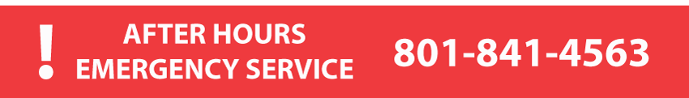

Rocky Mountain Large Animal Clinic is available 24 hours a day for emergencies. If you have an emergency that can't
wait until office hours, please call the after-hours number and leave a message. The doctor on call will call you
back and arrange to meet you at the Clinic or come to your location if needed. For other questions or to make an
appointment, please call 801-798-8123. We look forward to seeing you!

Not an emergency?
Schedule an appointment today!
Call 801-798-8123
March 15th to October 31st
Office hours:
Mon. – Friday 8:00 am to 6:00 pm
Saturdays 8:00 am to 1:00 pm.
November 1st to March 14th
Office hours:
Mon. – Friday 8:30 am to 5:30 pm
Saturdays 8:30 am to 1:00 pm.
3226 N. 1150 W. Spanish Fork, UT 84660
Directions
From I-15 Exit 260 in Springville, turn West on SR 77.
Travel 1.25 miles to T intersection at County Road 800 West (look for blue & white RMLAC sign).
Turn South, and the road dead ends at the Clinic in one-half mile.